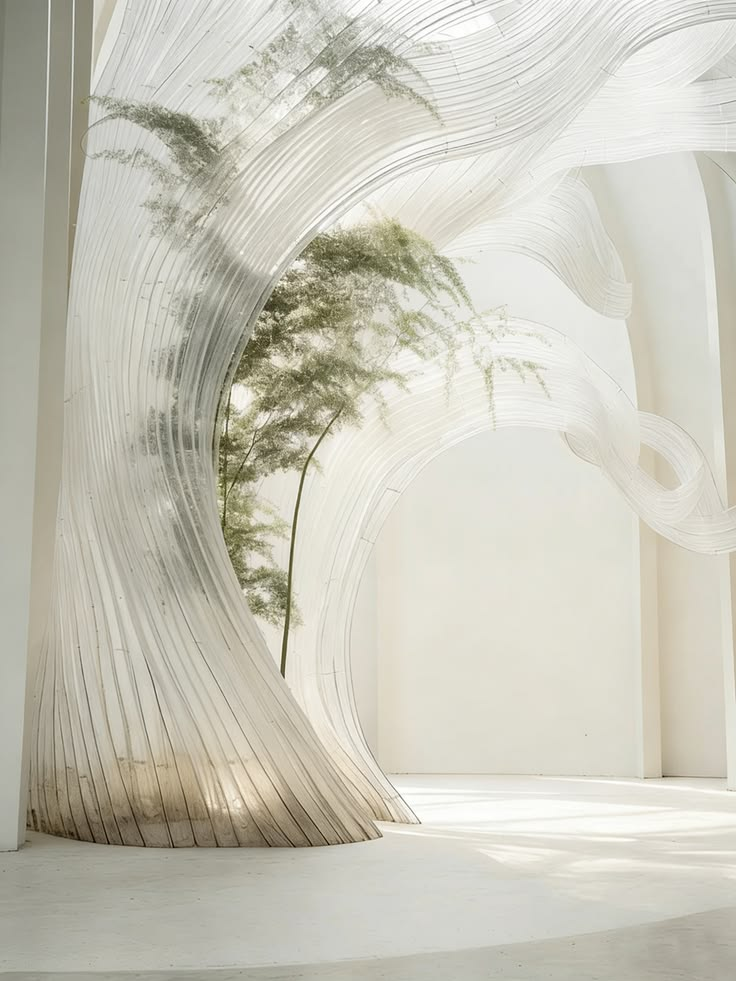
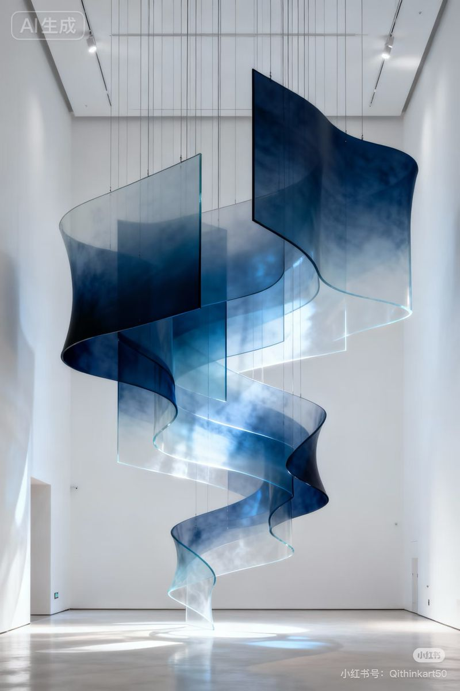
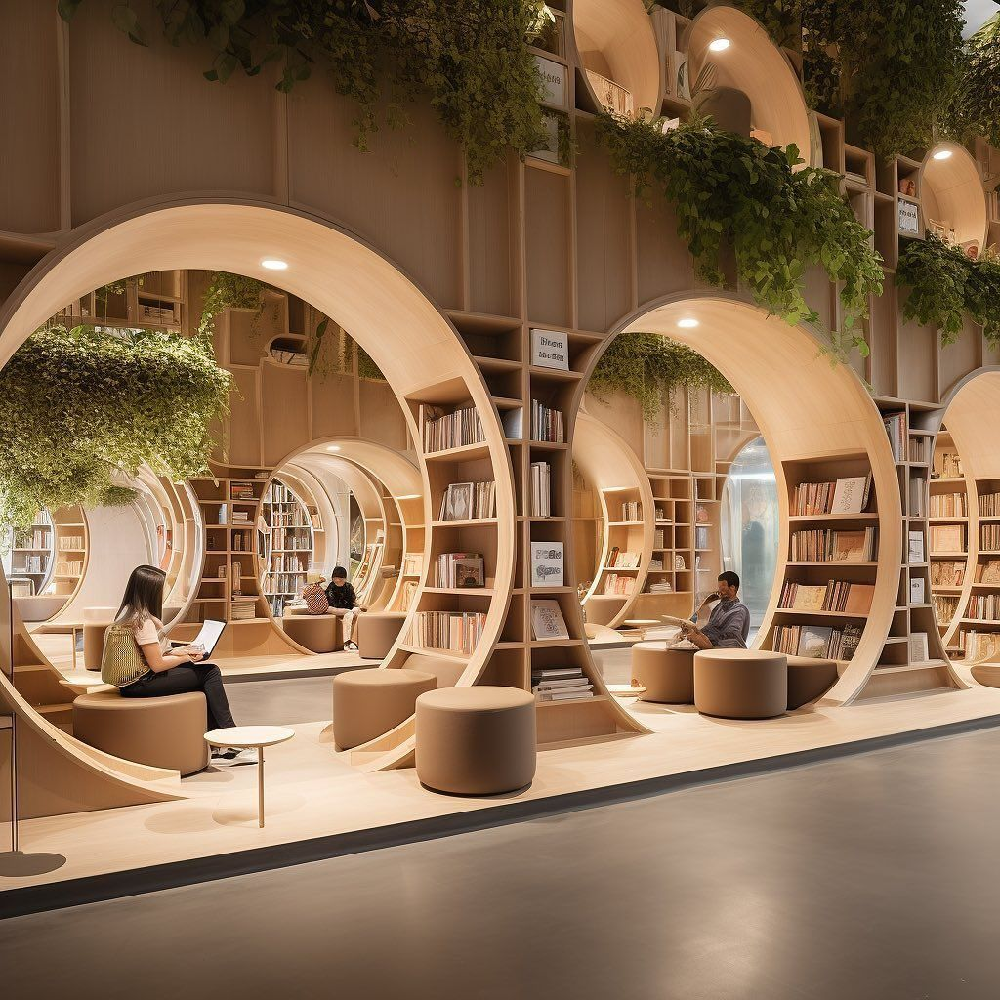

Bárbara Gutiérrez Tapia
Arquitectura · Docencia · Bienestar
Perfil
Disciplina / formación
Arquitecta
Qué hago hoy
Actualmente trabajo en docencia en taller de primer año a tiempo parcial y paralelamente, organizo una empresa construcciones y reparaciones de construcciones con pequeña y mediana escala, abordando desde la propuesta de diseño hasta el área constructiva.
Qué me gustaría aprender
Aprender del área computacional de forma ordenada, ya que la mayoría de los softwares que manejo han sido por prueba y error, sin tener una guía clara. Me gustaría evaluar si puedo desarrollar cosas más interesantes ya que me encuentro en una zona bastante desconocida para mí.
Intereses
- Diseño biofílico
- Arquitectura y bienestar
- Docencia e innovación dentro del aula
Una pregunta que me interesa explorar
¿Es posible mejorar la calidad de vida de los usuarios neurotípicos y neurodivergentes aplicando un diseño biofílico?
Algo que me inspira



Modelo 3D
Usa el mouse para rotar · Scroll para zoom · Toque para móvil